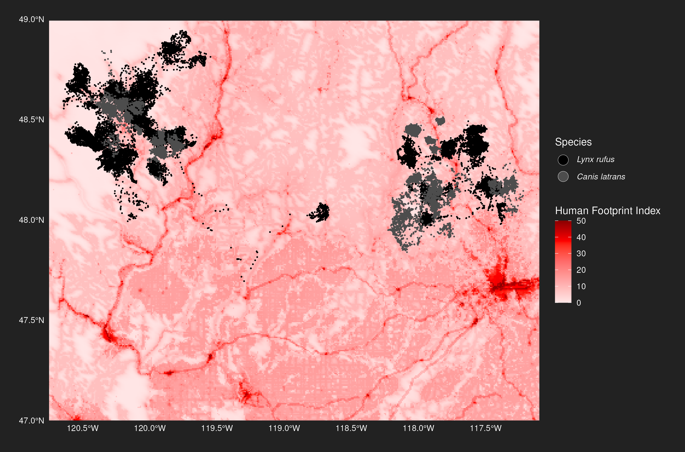

How does human activity affect the movement patterns of wild animals?
An analysis of selected datasets from the Movebank animal tracking database
Abstract
We investigate how human activity influences the movement patterns of wild animals. Using tracking data from red foxes, bobcats, and coyotes across rural and remote areas in England, Canada, and the US, we analyze home range sizes and habitat selection in relation to human footprint and land cover.
Introduction
Disturbance by humans has widespread impacts on the movements of animals, as confirmed by a large-scale meta study by Doherty, Hays, and Driscoll (2021). In this paper, two related research questions are addressed:
- Home range size implications: Do animals exhibit smaller home ranges in high human impact areas? This is examined by comparing red fox (vulpes vulpes) home ranges in low and high human impact areas.
- Habitat selection in human-influenced landscapes: How do animals select habitats under varying levels of human presence? This is analysed based on bobcat (lynx rufus) and coyote (canis latrans) data from a national park area.
Different datasets are used for each research question. Relying on Movebank data, as described in Section 3.2.1, presents additional challenges because data is used for purposes it was not originally collected for, and compared between different studies.
Material and Methods
This section describes the datasets, the steps taken to prepare and process the different datasets in use, and the methodological approach.
Datasets
The Movebank database by Kays et al. (2022) enables researchers to publish animal tracking data for public use. The following data is selected: Red fox data from Porteus et al. (2024) for the outskirt areas of villages in Wiltshire, UK and from Lai et al. (2022) for the remote uninhabited islands Bylot and Herschel in Canada, and bobcat and coyote data from Prugh et al. (2023) for remote areas with some rural structures in northern Washington, US. For the human footprint data, the global terrestrial human footprint data by Gassert et al. (2023) is chosen. For land cover, satellite data described in Zanaga et al. (2022) is employed.
Data preparation and processing
This section describes data preparation and processing for all the datasets employed.
Movebank data
All Movebank datasets have the same schema. This simplifies data handling, enables code re-use, and requires the data contributors do perform preprocessing and data cleaning on their side to provide the data in an appropriate format. Libraries for data processing and trajectory handling in R are provided by Kranstauber, Safi, and Scharf (2024) and Signer, Fieberg, and Avgar (2019).
The R code for data download, preprocessing, and serialization of relevant data and charts can be found in: Red fox: UK wader nesting season home ranges, Red fox: montly home ranges, Bobcat/coyote: data preparation and statistical modelling.
Human footprint data
The global 100 meter resolution terrestrial human footprint data (HFP-100) is a raster dataset using Mollweide projection as described by Lapaine (2011). The 2020 version of the data was used. The relevant areas were downloaded using a 125 km buffer around the tracking points, and projected to the WGS84 coordinate system: HFP-100 download.
Land cover data
The relevant European Space Agency (ESA) WorldCover 2021 data at 10 m resolution was downloaded via the Microsoft Planetary Computer STAC API for simple programmatic access in R: ESA download.
Data exploration and analysis
This section describes the data exploration steps taken for red fox data, and for bobcat and coyote data.
Red fox data
Data from Wiltshire (see Figure 1) was collected between 2016 to 2019 during the UK wader nesting season, which was defined to be March 15th to June 15th, for 35 foxes in total. It was sampled at 10 and 60 minute rates. The research team controlled the sampling rate remotely to save battery at times the data was considered less interesting.


Data from Bylot (see Figure 2 (a)) and Herschel (see Figure 2 (b)) was collected all year round, at a much lower sampling rate of once per day at random afternoon times of the day. The collection period was June 2009 to Feb 2010 for Herschel and from 2011 to 2015 for Bylot, for two foxes each per island. Figure 3 (a) provides an overview of the amount of data points available per year. There is much more data from Wiltshire because of the higher number of foxes and the higher sampling rate. Looking at the breakdowns by month as shown in Figure 3 (b) reveals seasonal differences in the amount of data available.


Bobcat and coyote data
Prugh et al. (2023) provide data for 29 coyotes and 30 bobcats collected between June 2018 and June 2022. Two animals from each dataset were completely excluded from the analysis because of data sparsity issues. There was partly faulty data for one bobcat, which was also excluded. The majority of the data was usable.
Figure 4 shows that the two species reside in two separated geographical areas and have interspersed home ranges. It also features a plot of the animal locations in the context of the extracted land cover data. Figure 5 reveals the human footprint in the area, which is generally low except for some settlements and country roads.


The data sampling intervals are intended to be four hours, however they are irregular with many outliers (see Figure 6). In addition, the bobcat intervals are less dense and less regular in comparison.


Methodology
In this section, the methodologies selected to tackle the research questions are presented in detail.
Home range size assessment
The red fox data is used for home range size assessment for rural and remote locations. Home range sizes are calculated using minimum convex polygons, which provides easily comparable estimates of the area used by each individual animal. As discussed in Section 3.3.1, the datasets for the two locations have different temporal scale.
Laube and Purves (2011) have found that the choice of temporal scale has considerable effects on movement parameter calculations, in turn affecting home range results. How to make this data comparable? Problem #1 is that the sampling intervals are different. Problem #2 is that the data coverage varies by time of the year. Problem #3 is that there are highly different amounts of data. Selecting the means and parameters for the comparison involves complex choices that will influence the results. For #1, a possible approach to achieve similar sampling intervals would be to sample a random afternoon data point for each 24 hour window. However, this would include the implicit assumption that foxes will follow similar daily patterns in the different environments. For #2, a possible approach would be to compare the data for the same time of the year. But since the geographical locations are different, the seasonal weather conditions will differ for the same day of the year, likely leading to different animal behavior. For #3, aggregated comparisons can solve the issue, assuming there is enough data for the smaller data source.
For data exploration the simplest possible imperfect approach is employed, which is to ignore the different sampling intervals for problem #1, to compare the data for the same time of the year for problem #2 even if animal behavior might be different, and to use exploratory data analysis to find out if a representative answer can be found given the amount of data present for problem #3. Note that this approach has obvious limits. Among them is that the Herschel data is not applicable, since it has minimal overlaps with the Wiltshire data (see Figure 3 (b)). To explore the impact of sampling intervals for problem #1, the home ranges for the Wiltshire data are additionally calculated on downsampled data, where a random data point from every 24 hour period is selected. Finally, an analysis of monthly home ranges is conducted on all three datasets as an alternative solution to address problem #2.
Trajectory analysis and habitat selection
Movement paths are analyzed to identify patterns in speed, direction, and habitat use. Step lengths and turning angles help infer behavioral states. Step-selection functions (SSFs) as described by Fortin et al. (2005) are employed to detect habitat preferences relative to movement patterns. This allows to quantify how animals respond to environmental covariates, such as human footprint and land cover. Selection patterns across species and regions are then compared to assess how habitat preferences vary with human influence.
Since SSFs require a regular sampling rate which the original data does not provide (see Figure 6 (b)), the animals tracks were re-sampled to a four hour window for coyotes and an eight hour window for bobcats. The amt library’s track_resample() function by Signer, Fieberg, and Avgar (2019) was used, with a specified tolerance window of 10 minutes. The re-sampled tracks are translated into animal steps with certain step lengths and turning angles as the main input to the SSF. The control group for statistical analysis is comprised of randomly generated steps.
To compare land cover choices, which translate into habitat characteristics, several statistical approaches are possible. The classical approach is to use conditional logistic regression to compare between observed and random steps (clogit, see Manly et al. (2007)). However, for datasets containing several animals such as the given data, a Poisson-based approach with stratum-specific fixed intercepts as introduced by Muff, Signer, and Fieberg (2020) is likelihood-equivalent and in this case returns better results. Interpreting the intercepts as random effects allows implementation as a generalized linear mixed model (GLMM, see Bolker et al. (2009)), which in turn enables introducing random slopes per individual animal.
Results
The resulting fox home ranges for the UK wader nesting season time frame are shown in Figure 7 and Figure 8 (a). The median home range size for the remote foxes in Bylot (75.3 km2) is more than 65 times larger compared to the rural foxes in Wiltshire (1.1 km2). The home ranges for the sub-sampled Wiltshire data are shown in Figure 8 (b). The median home range size is 0.56 km2 for the sampled data, which is roughly half as much as for the full data.


Similar differences in order of magnitude between remote and rural fox home ranges can also be observed for the monthly home range results shown as a box plot in Figure 9. Note that outliers are removed, in particular the irregular data for Herschel (as seen in Figure 2 (b)). The accompanying monthly home range plots can be found in the Appendix in Figure 10, Figure 11, and Figure 12.
TBD For habitat selection, deriving statistically significant results from the bobcat data was not possible. The results for the coyote data are shown in
Model validation
According to Rykiel Jr (1996), model validation means demonstrating that a model is acceptable for its intended use. The purpose, criteria, and context of the model must be specified.
For home range size comparison, two models were defined comprised of data, home range calculation based on minimum convex polygons, and median selection. The validation criteria required the amount of difference between the results to be significantly larger (i.e., by a factor of more than 10 times) than the effects on the results introduced by data properties. For that order of magnitude, Nilsen, Pedersen, and Linnell (2008) found that the choice of home range estimator has a secondary impact compared to range size differences. Since the geographic location context was diverse, to exclude distortions in the coordinate system as a potential unwanted influence, the results for Bylot island were spot checked for three applicable coordinate systems: WGS84 geographic coordinate system (EPSG:4326), NAD 83 / Statistics Canada Lambert projection (EPSG:3347), and Universal Transverse Mercator (UTM) zone 17N (EPSG:2958). These were identified using the CRS Explorer. The differences in the median home rage size results (UK wader season) for the foxes in Bylot were minor: 75.3 km2 for WGS84, 73.3 km2 for EPSG:3347, and 75.8 km2 for EPSG:2958.
For the habitat selection, statistical modelling was employed to assess the likelihood of the given results happening by chance, and statistical model validation was performed to ensure a good fit. TBD add a plot.
Discussion
The fox home range size results show enormous differences between rural and remote areas. We conclude that human presence changes fox movement behavior patterns fundamentally. The opportunity to move undisturbed, and the availability of anthropogenic food sources are likely the most relevant factors but more data would be needed to have proof for the underlying reasons. One thing that is interesting to see is that the fox home range sizes for Bylot and Herschel foxes are similar, even if the island sizes differ by a factor of 100.
Note that there is one fox with an extraordinarily large home range in Figure 8 (a), and the additional charts in Section 8.1 show several instances of large fox movements within a single month. Kobryn et al. (2023) report similar patterns with a small number of foxes covering much larger areas than others. They conclude that the data is genuine and demonstrates potential for extensive movement patterns in urban foxes, and state that in some studies such outliers are either removed or cannot be tracked because of hardware setup restrictions, therefore underestimating home ranges.
While technical aspects such as sampling intervals and home range estimator have significant influence on the calculation results, they play a secondary role in comparison to the difference in fox behavior, which enables the chosen approach of comparing data from heterogeneous sources.
Another instance of data aspects having large effects on the results was observed for the statistical modelling. While we could fit a model for coyote data, this was not possible for the bobcat data. We suspect that the re-sampling required due to irregular sampling rates as shown in Figure 6 played a role.
TBD habitats
Conclusion and outlook
We have performed spatial data analysis and statistics on externally contributed publicly available data to demonstrate that human activity influences animal behavior significantly. We could show that (1) fox home range sizes are much larger in remote areas, and that (2) bobcats prefer forests over built-up areas for habitat selection depending on human footprint.
Appendix
Additional charts


Use of Large Language Models and Generative AI
Elke used NotebookLM (2025) for querying the papers cited in the references, and OpenAI (2025) for ggplot related queries.
References
Bolker, Benjamin M, Mollie E Brooks, Connie J Clark, Shane W Geange, John R Poulsen, M Henry H Stevens, and Jada-Simone S White. 2009. “Generalized Linear Mixed Models: A Practical Guide for Ecology and Evolution.” Trends in Ecology & Evolution 24 (3): 127–35.
Doherty, Tim S, Graeme C Hays, and Don A Driscoll. 2021. “Human Disturbance Causes Widespread Disruption of Animal Movement.” Nature Ecology & Evolution 5 (4): 513–19.
Fortin, Daniel, Hawthorne L Beyer, Mark S Boyce, Douglas W Smith, Thierry Duchesne, and Julie S Mao. 2005. “Wolves Influence Elk Movements: Behavior Shapes a Trophic Cascade in Yellowstone National Park.” Ecology 86 (5): 1320–30.
Gassert, Francis, Oscar Venter, James EM Watson, Steven P Brumby, Joseph C Mazzariello, Scott C Atkinson, and Samantha Hyde. 2023. “An Operational Approach to Near Real Time Global High Resolution Mapping of the Terrestrial Human Footprint.” Frontiers in Remote Sensing 4: 1130896.
Kays, Roland, Sarah C Davidson, Matthias Berger, Gil Bohrer, Wolfgang Fiedler, Andrea Flack, Julian Hirt, et al. 2022. “The Movebank System for Studying Global Animal Movement and Demography.” Methods in Ecology and Evolution 13 (2): 419–31.
Kobryn, Halina T, Edward J Swinhoe, Philip W Bateman, Peter J Adams, Jill M Shephard, and Patricia A Fleming. 2023. “Foxes at Your Front Door? Habitat Selection and Home Range Estimation of Suburban Red Foxes (Vulpes Vulpes).” Urban Ecosystems 26 (1): 1–17.
Kranstauber, Bart, Kamran Safi, and Anne K Scharf. 2024. “Move2: R Package for Processing Movement Data.” Methods in Ecology and Evolution 15 (9): 1561–67.
Lai, Sandra, Chloé Warret Rodrigues, Daniel Gallant, James D Roth, and Dominique Berteaux. 2022. “Red Foxes at Their Northern Edge: Competition with the Arctic Fox and Winter Movements.” Journal of Mammalogy 103 (3): 586–97.
Lapaine, Miljenko. 2011. “Mollweide Map Projection.” KoG 15 (15.): 7–16.
Laube, Patrick, and Ross S Purves. 2011. “How Fast Is a Cow? Cross-Scale Analysis of Movement Data.” Transactions in GIS 15 (3): 401–18.
Manly, BFL, Lyman McDonald, Dana L Thomas, Trent L McDonald, and Wallace P Erickson. 2007. Resource Selection by Animals: Statistical Design and Analysis for Field Studies. Springer Science & Business Media.
Muff, Stefanie, Johannes Signer, and John Fieberg. 2020. “Accounting for Individual-Specific Variation in Habitat-Selection Studies: Efficient Estimation of Mixed-Effects Models Using Bayesian or Frequentist Computation.” Journal of Animal Ecology 89 (1): 80–92.
Nilsen, Erlend B, Simen Pedersen, and John DC Linnell. 2008. “Can Minimum Convex Polygon Home Ranges Be Used to Draw Biologically Meaningful Conclusions?” Ecological Research 23: 635–39.
NotebookLM. 2025. “NotebookLM.” https://notebooklm.google/.
OpenAI. 2025. “ChatGPT.” https://openai.com/chatgpt.
Porteus, Tom A, Mike J Short, Andrew N Hoodless, and Jonathan C Reynolds. 2024. “Movement Ecology and Minimum Density Estimates of Red Foxes in Wet Grassland Habitats Used by Breeding Wading Birds.” European Journal of Wildlife Research 70 (1): 8.
Prugh, Laura R, Calum X Cunningham, Rebecca M Windell, Brian N Kertson, Taylor R Ganz, Savanah L Walker, and Aaron J Wirsing. 2023. “Fear of Large Carnivores Amplifies Human-Caused Mortality for Mesopredators.” Science 380 (6646): 754–58.
Rykiel Jr, Edward J. 1996. “Testing Ecological Models: The Meaning of Validation.” Ecological Modelling 90 (3): 229–44.
Signer, Johannes, John Fieberg, and Tal Avgar. 2019. “Animal Movement Tools (Amt): R Package for Managing Tracking Data and Conducting Habitat Selection Analyses.” Ecology and Evolution 9 (2): 880–90.
Zanaga, Daniele, Ruben Van De Kerchove, Dirk Daems, Wanda De Keersmaecker, Carsten Brockmann, Grit Kirches, Jan Wevers, et al. 2022. “ESA WorldCover 10 m 2021 V200.”